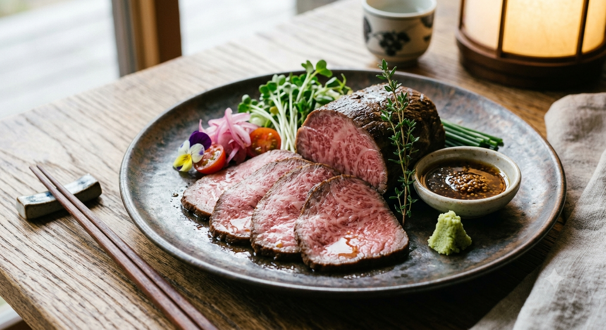
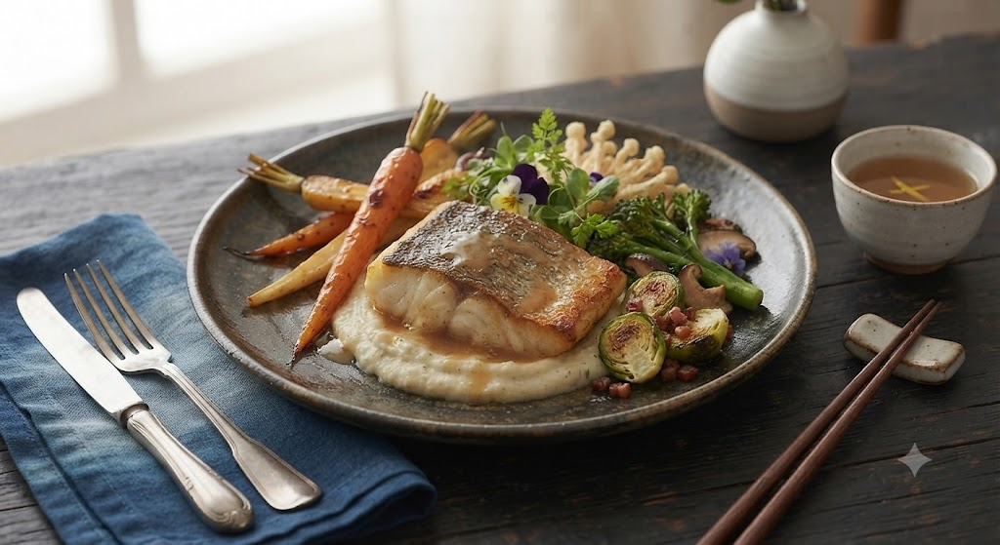
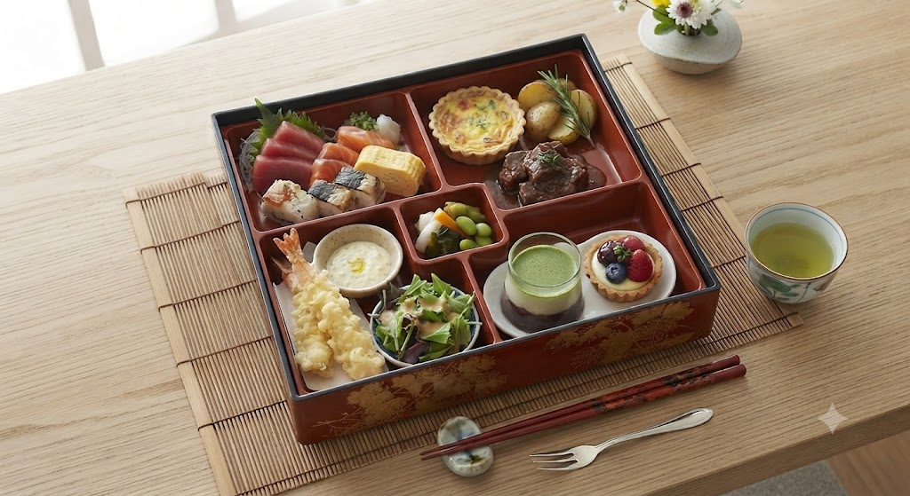
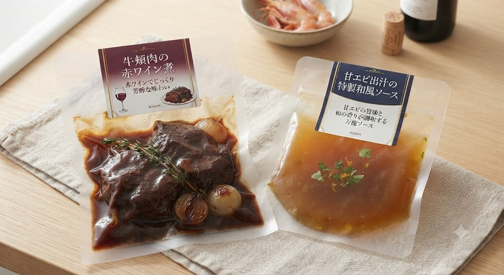
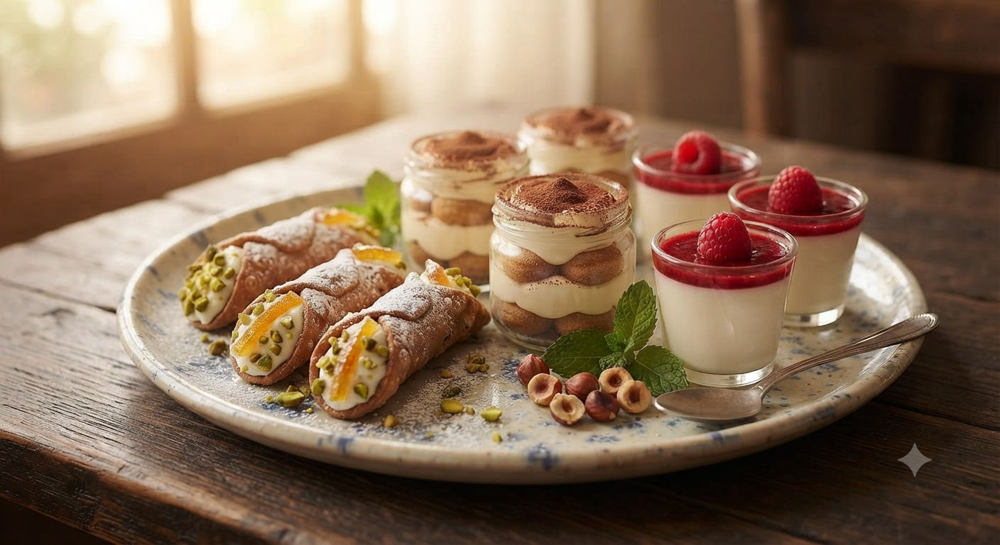

仙台・雨宮町
和食の繊細さと、洋食の躍動。
二人の職人が繰りなす、
一皿に込めた至高の旋律。
Scroll

「勝（まさる）」の厨房には、妥協がありません。漁師から届く朝獲れの魚、農家が手塩にかけた野菜。
和食の板前は素材の輪郭を際立たせ、洋食のシェフはソースに深みを宿す。相反する二つの技が、一皿の上で共鳴し、これまでにない感動を創出します。
刺身、一口ヒレカツ、茶碗蒸し、牛頬肉の赤ワイン煮。和洋の境界を軽やかに飛び越える、当店一番人気のランチメニューです。一品一品に職人のプライドが宿ります。

カウンターからソファー席まで。デート、会食、お一人様。あらゆるシーンに寄り添います。
魚が食べたい人も、肉が食べたい人も。専門シェフがなたの我儘に応えます。
北仙台駅徒歩7分。静かな雨宮町で、都会の喧騒を忘れるひとときを。
「仙台でこのレベルの料理を出せるのは正直ビックリ。和食も洋食も楽しめる。毎日オーナーが食材を見てメニューを考えているそうで、素材、味付け、盛り付けなど文句なしです。」
— Google Map クチコミより
「すべての料理に完璧な味つけがほどこされていて、完成度が高いです。魚の骨蒸し造り、ビーフシチュー、甘エビの出汁の味噌汁…。満足の内容です。また伺いたい。」
— Google Map クチコミより
皆様の「勝でもっとこんな体験がしたい」という声にお応えする、企画・開発中の新たなサービスをご案内します。

ONLINE STORE「遠方の家族に食べさせたい」「自宅での特別な記念日に使いたい」というご要望にお応えし、シェフ特選の「牛薫肉の赤ワイン煮」や「甘エビ出汁の特選和風ソース」をご自宅の冷凍だけで再現できるパッキング。贅沢おうちごはんをお届けします。
2026年秋・サービス開始予定

Instagramをフォロー、またはハッシュタグ投稿をしていただいたお客様に、シェフ特選デザートをサービスいたします。
@wayoubistromasaru
公式アカウントをチェック →